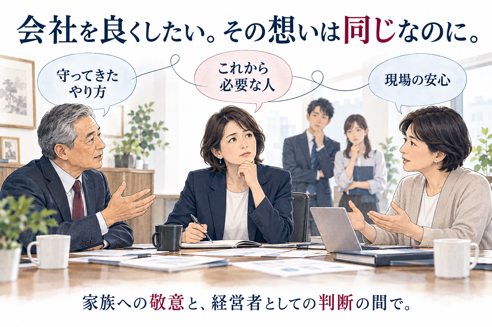
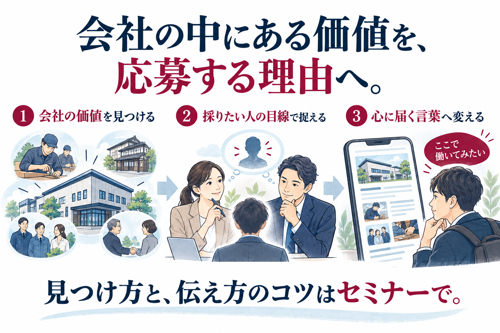
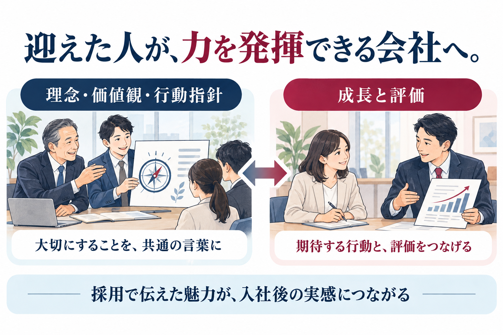

01
「欲しい人」を決める人が、一人ではない
一般企業でも、経営陣と現場の意見は食い違います。ファミリー企業では、そこに家族としての関係が重なります。
先代、配偶者、古参幹部、そして後継者。それぞれの頭の中に別の人物像があり、家族だからこそ正面から擦り合わせにくいのです。
社長が「自分で考えて動く人」を求め、現場は「これまでのやり方に従う人」を期待している。
このずれを残したまま求人原稿を書けば、応募を集めても、採用の判断や入社後の期待が食い違ったままになります。
ファミリー企業の2代目・3代目経営者の方へ
「こういう人が欲しかった」
そんな応募者が従来の2〜3倍集まり、
定着率も改善できるセミナー
申込みURLを確認後に有効化します
応募が来ない。来ても欲しい人ではない。ようやく採用しても、辞めてしまう。
この3つは、別々の問題ではありません。和奏は、ファミリー企業に特有のひとつの構造として、つなげて考えます。
本セミナーでは、その構造を解き明かし、採りたい人に届く求人と、迎えた人が長く活躍する会社を、同時につくる方法をお伝えします。
01 / YOUR CONCERNS
一つでも思い当たるなら、それは御社だけの問題ではありません。
多くのファミリー企業の2代目・3代目が、同じように直面してきた壁です。
そして、その壁には共通の構造があります。

02 / THE STRUCTURE
求人媒体の担当者も、紹介会社も、採用のノウハウ本も、ほとんどが一般企業を前提に書かれています。
しかし、ファミリー企業の採用には、家族としての関係と経営上の役割が重なることで生まれる、固有の難しさがあります。
私たちは、その違いを5つに整理しています。
01
一般企業でも、経営陣と現場の意見は食い違います。ファミリー企業では、そこに家族としての関係が重なります。
先代、配偶者、古参幹部、そして後継者。それぞれの頭の中に別の人物像があり、家族だからこそ正面から擦り合わせにくいのです。
社長が「自分で考えて動く人」を求め、現場は「これまでのやり方に従う人」を期待している。
このずれを残したまま求人原稿を書けば、応募を集めても、採用の判断や入社後の期待が食い違ったままになります。
02
「うちでは、こういう人が認められる」。
家族と古参社員の間では、言わなくても通じています。だから、誰も明文化してきませんでした。
その基準を知らないのは、新しく入った人だけです。
「聞いていた話と違う」
「何をすれば評価されるのか分からない」
和奏が定着支援で最初に見るのは、この「伝わっていない基準」です。
03
仕事内容、待遇、人間関係。どの会社に応募する人も、同じ不安を抱えています。
ファミリー企業に応募する人は、それに加えてこう考えます。
「身内が優遇されるのではないか」
「社長の家族と、どう付き合えばいいのか」
「後継者の下で、自分に将来はあるのか」
この不安に答え、「そこで働く自分」を想像できる情報が、応募を後押しします。和奏は、その情報を求人に用意します。
04
何十年も続いてきたという事実。
経営者との距離の近さと、その覚悟。
地域との結びつき。
これらは経営者にとって当たり前すぎて、求人に書く価値があるとは思えません。
経営者自身には見えにくいからこそ、家族の歴史と会社の歩みが重なる事情を理解した上で、外から掘り起こす視点が要ります。
05
後継者が自分の言葉で理念を語れていないと、求人は先代の会社の求人になります。
求職者が見ているのは、会社の看板ではなく「この人についていけるか」です。
「社長の息子（娘）だから」ではなく、「この人だから」と言われる経営者であるか。
それは、後継者としての力量の問題ではありません。
先代が築いたものに、あなたがこれから何を加えようとしているのか。それが求職者に「伝わっているか」の問題です。
だからこそ、求人で変えることができます。
経済産業省が公表した「ファミリーガバナンス・ガイダンス」でも、家族と会社の関係を整理することは、同族企業の経営課題として位置づけられています。
採用は、その関係が最初に表に出る場面です。
だから、ファミリー企業の採用は、求人原稿の手直しだけでは変わりにくいのです。
03 / OUR APPROACH
多くの採用支援は、求人原稿の改善から入ります。
見出しを変え、写真を差し替え、給与欄を目立たせる。それで応募が増えることもあります。
しかし、ファミリー企業では、それだけでは変わりにくいのです。先ほどの5つの構造が、求人原稿の外側にあるからです。
「誰が欲しいかも、自社の魅力も、うまく言葉にできない」。
その状態からで大丈夫です。
和奏には、それを見つけ、求人に使える言葉へ変える手順があります。

和奏は、順番を変えます。
先代・古参幹部・後継者の頭の中にある人物像を、求人と採用の判断に使える一人の人物像にまとめます。
経営者には当たり前すぎて見えていない価値を、求職者が会社を選ぶ理由へ言い換えます。
求人を見てから応募を決めるまで、どの段階でどんな不安が生まれるのか。その順に、答えを用意します。
求人原稿は、この3つの後に書きます。だから、同じ媒体、同じ予算でも、応募の質と量が変わります。
FOR URGENT HIRING
「整えてからでは、今の人手不足に間に合わない」。そう思われる方も多いはずです。
ご安心ください。和奏の支援では、応募を集める取り組みと、受け入れ・定着に向けた整備を並行して進めます。
すべてが整うまで、採用を待つ必要はありません。
04 / CASE STUDIES
人口の少ない地域、知名度の低い業種、費用をかけても応募ゼロ。
一般的な採用支援では「難しい」とされる条件の会社ばかりです。
CASE 01
取り組み前
さまざまな媒体で求人を出しても、2年間で応募4名。
支援後
2か月で22名が応募、3名を採用。
その後
採用から1年後、3名とも活躍。
「人口3万人の田舎にある企業なので、そもそも応募は来ないと半ば諦めていたが、会社の強みを見いだしてくれ、求人コンセプトを変えたら、突然応募が集まった」
CASE 02
取り組み前
1年間で約1,000万円をかけて、応募ゼロ。
支援後
1か月半で19名が応募、6名を採用。
その後
採用から9年後、4名が活躍。
「1000万円も払ってゼロという結果に怒り心頭。和奏さんに相談したところ、今まで聞いたことのないやり方を提案され、思いきってお願いしたところ、一気に人が集まった」
CASE 03
取り組み前
大手媒体に3か月で約90万円、応募30名、採用2名。
支援後
2か月半で103名が応募、9名を採用。
その後
採用から1年後、7名が活躍。
「以前は応募者のレベルが低く、面接する気にもなれなかったが、選考に迷うくらい応募者が集まり、質も良くなった。断るのが勿体ない人もいた」
定着の改善例
離職率46.6％から23.7％へ改善した支援事例もあります。
応募を増やすことと、入社後に活躍できる環境をつくること。その両方に取り組んだ結果です。
※掲載数値・コメントは個別の支援事例です。成果が出るまでの期間や結果は企業によって異なり、セミナーへの参加によって同様の成果が得られることを保証するものではありません。
05 / RETENTION
応募が増えても、迎えた人が辞めてしまえば、採用は振り出しに戻ります。
定着しない原因の多くは、本人の資質ではなく、「家族や古参の間で通じていること」が新しい人に伝わっていないことにあります。
和奏では、このずれを整えるために、2つのメソッドを用います。

01
先代が守ってきたことと、後継者が実現したいこと。
この2つを対立させず、創業家としての方向性を一つにそろえ、社員にも伝わる言葉へと落とし込みます。
後継者が自分の言葉で理念を語れるようになったとき、求人は「先代の会社」の求人ではなくなります。
古参社員にも新人にも共通する、仕事の拠り所ができます。
02
「うちでは、こういう人が認められる」という暗黙知を、誰にでも見える基準に変えます。
会社が大切にすること、社員に期待すること、実際に評価すること。
この3つをつなげ、社員が自分の成長の方向を理解し、日々の取り組みが評価につながる状態をつくります。
新しく入った人が「何をすれば認められるのか」に迷わない会社では、人は定着しやすくなります。
欲しい人に応募してもらい、迎えた人が力を発揮できる会社へ。
採用と定着を切り離さず、ひとつの構造として整えること。
それが和奏の支援の特徴です。
06 / PROGRAM
同じ「良い人が欲しい」でも、頭の中にいる人物は違います。漠然とした希望を、求人と採用の判断に使える一人の人物像へまとめる手順をお伝えします。
言葉を整えても反応が変わらないのはなぜか。5つの構造のどこに御社の原因があるのか、自社で見当をつけられるようになります。
「身内が優遇されるのでは」「後継者の下で将来はあるのか」。求職者のその不安に、御社の事実で答え、「ここで働いてみたい」へ変える切り口の見つけ方をお伝えします。
求人を見てから、興味を持ち、調べ、応募を決めるまで。求職者の気持ちと行動に沿って、情報の質・量・届け方を見直す3つの視点をお伝えします。
「経営理念・価値観・行動指針の最適化」と「成長と評価が一体になった評価体系」。この2つがなぜ定着につながるのか、急ぎの採用とどう並行するのかをお伝えします。
人物像や自社の強みを、整理してから参加する必要はありません。
「うちの場合は、どこから手をつければいいのか」。
その手がかりを持ち帰ってください。

07 / LECTURER
廣瀬 祥久
和奏人事パートナーズ 代表
私自身、2代目が経営する叔父の着物専門店で働き、常務取締役として経営や人・組織の課題に向き合ってきました。
店長時代、社員が一気に半分退職し、売上も低迷。円形脱毛症や胃潰瘍になるほど悩み続けました。
人を育てたいのに、現場を回すことで精一杯になる。
一方で、家族だからこそ言いにくいことがあり、先代や古参社員への敬意もある。
会社を変えたいと思っても、簡単には進められない。
その中で「社員もある意味、会社のお客様だ」という発想に至り、マネジメントを変えました。社員間の雰囲気が良くなり、定着率は上がり、売上は全店トップになりました。
3.11の2か月後、会社は倒産しました。1年間の残務整理を経て、2012年に独立。
マーケティングの考え方を採用に取り入れ、会社の強みを「働きたい人に届く言葉」へ変える支援に取り組んできました。
現在は、会社の価値を採りたい人に届く言葉へ変える「和奏式・MASP-CM法」や、求職者の気持ちと行動を捉える「和奏式・求職者心理8段階モデル」を用い、応募を集める取り組みから、入社後の組織づくりまで支援しています。
「社長の息子だから」ではなく、「この人だから」と言われる経営者になる。
その難しさも、その先に何があるかも、私は知っています。
セミナーでお会いできるのを楽しみにしています。
08 / SEMINAR INFORMATION
申込みURLを確認後に有効化します
09 / FAQ
すべての仕組みが整うまで採用を待つ必要はありません。
急ぎ人材が必要な場合、応募を集める取り組みと、受け入れ・定着に向けた整備を並行して進めます。セミナーでも、その優先順位の考え方をお伝えします。
はい。その見つけ方を知っていただくためのセミナーです。
「どこから考えればよいか分からない」という状態でも、ご参加いただけます。
はい。採用対象、伝える魅力、求人の切り口、応募までの流れなど、掲載中の求人を見直す際にも使える視点をお伝えします。
条件は大切ですが、求職者が職場を選ぶ理由はそれだけではありません。
今ある自社の価値を掘り起こし、採りたい人に届く形へ変える余地を探します。職種や地域の状況によっては、条件の見直しも含めて考える必要があります。
はい。家族の仲が良くても、採りたい人物像や社員に期待することが、十分に共有されていない場合があります。
家族や古参社員の間で通じていることを、新しく入る人にも伝える視点を扱います。
セミナーでは、考え方と見直しのポイントをお伝えします。
自社の理念や評価体系を具体的につくり上げるには、会社ごとの状況に沿った検討が必要です。
はい。むしろ、その状況の方にこそ役立ちます。
先代と後継者で「欲しい人物像」をそろえる手順は、セミナーの中心テーマの一つです。先代と一緒にご参加いただくことも歓迎します。
10 / MESSAGE
人が足りない。早く採用したい。
その切実さは、会社を良くしたいという思いの裏返しです。
御社には、まだ求人で伝え切れていない魅力があります。
先代が積み重ねてきた年月も、あなたがこれから変えようとしていることも、求職者にとっては「ここで働く理由」になり得ます。
その見つけ方と、伝え方を知る。
そして、迎えた人が長く活躍するために必要なことを、採用と並行して整えていく。
「こういう人が欲しかった」と思える応募を。
「この会社を選んでよかった」と思える職場を。
まずはセミナーで、御社の採用を変える手がかりを見つけてください。
参加費無料｜オンライン開催｜各回5社